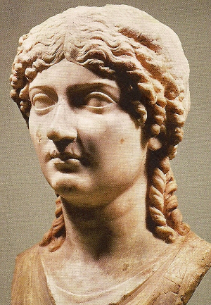

DONITIUS Ahenosarbus! Chỉ một cái tên đó cũng đủ làm rợn tóc gáy những người dân La Mã thời bấy giờ. Thế kỷ I sau J.C. Cái tên mọi rợ làm sao! Lão này là một vị quan chấp chính tàn bạo, điên khùng, trụy lạc, vô liêm sỉ, mà nhân dân La Mã ghê tởm. Còn Agrippine, là cháu hai đời của Hoàng đế Auguste, cũng là một cô gái dữ tợn, đã có tiếng ngay từ lúc còn bé là một hung nữ của dòng dõi César…Số kiếp xui khiến ông lão Ahenobarbus gặp cô bé Agrippine, lại mê vẻ đẹp sắc bén của nàng và xin cưới nàng làm vợ, Agrippine mới có 13 tuổi!

Chín tháng sau, tháng 12 năm 37 sau J.C. Agrippine sinh một đứa con trai, có ác tướng, mà nàng đặt tên là Néron. Bà con thân thuộc đến mừng, thì Ahenobarbus chỉ đứa bé nằm trong nôi, mặt mũi dữ tợn và bảo:
- Ta và Agrippine phối hợp với nhau chỉ có thể đẻ ra một con ác quỷ!
Câu nói nầy, Lịch sử cổ La mã còn ghi lại nguyên văn và chẳng phải là câu nói ngoa. Néron lớn lên, Agrippine nhờ một thầy bói khoa chiêm tinh coi số tử vi cho Néron, Thầy bói nói:
- Sau này, Néron sẽ lên ngôi hoàng đế nhưng chàng sẽ giết mẹ.
Agrippine trả lời:
- Nó giết ta thì cứ giết, miễn là nó được lên ngôi Hoàng đế!
Từ ngày vợ đẻ, ông lão Ahenobarbus (tục gọi ông già râu đỏ) bỏ kinh đô đi mất. Ông đã hung dữ, vợ ông còn hung dữ hơn ông!. Bây giờ ông thấy đứa con mới ra đời, nét mặt đã đầy sát khí, ông sợ quá, đang đêm trốn ra hòn đảo Sicile, rồi chết tại đó.
Agrippine không hề thương nhớ chồng. Nàng là một người đàn bà tham lam vô độ, một ác phụ chỉ có một hoài bão là chiếm ngôi Hoàng Đế La Mã để làm bá chủ thiên hạ. Hoàng đế Caligula đang trị vì Đế quốc La Mã, chính là anh ruột của nàng. Nàng quyết tâm ám hại anh, để dành riêng ngôi báu. Muốn đạt mục đích ấy, nàng bắt đầu quyến rũ vị quan hầu cận của vua, còn trẻ tuổi, tên là Lépide. Ngay hôm đầu, nàng hiến thân cho y. Lépide vừa sung sướng vừa kinh ngạc, nhưng Agrippine cười, nói thầm vào tai y:
- Chàng có muốn Agrippine trẻ đẹp của chàng lên ngôi Hoàng đế La mã không?
Lépide càng kinh hồn, nhưng cô gái 22 tuổi trừng mắt ngó y:
- Chàng phải giết anh của ta! Caligula phải chết, để ngôi báu của dòng họ César cho Agrippine này! Hoài vọng của ta hoàn thành, ta sẽ chính thức lấy chàng để cùng trị vì Đế quốc La mã.
Lépide, 20 tuổi, vị quan hầu của Caligula, liền hăng hái tuân theo lịnh nàng. Bất ngờ Caligula có ban mật vụ, biết rõ câu chuyện. Lépide bị xử tử tức khắc. Agrippine bị đày ra đảo Pontiques. Nhà vua chỉ ngón tay vào mặt cô em gái:
- Con khốn nạn! Chừng nào mi trở về được kinh đô, ta sẽ nhường ngôi cho mi!
KHI MỘT VỊ HOÀNG HẬU MÊ TRAI…
Ngày 24 tháng hai năm 41, Caligula bị một nhóm loạn quân ám sát ngay trong cung điện. Người bác ruột của vua, tên Claude, sợ hãi quá, lật đật chui trốn phía sau một tấm màn, ngồi run cầm cập. Không dè, loạn quân trông thấy, lôi ông ta ra, và tôn ông lên ngôi Hoàng đế!
Agrippine nghe tin mừng, vội vàng từ giã đảo Pontiques, trở về Kinh đô. Nhưng đâu phải nàng định về Cung điện, để đóng vai người cháu gái ngoan ngoãn của vị Vua mới! Nàng vẫn nuôi tham vọng giành ngôi Hoàng đế cho riêng nàng cơ mà! Hoàng đế Caligula vừa bị ám sát, là anh ruột của nàng, Hoàng đế Claude lên ngôi kế vị, là bác ruột của nàng. Agrippine đã không thành công với anh, thì nàng quyết sẽ thành công với bác vậy.
Nhưng Claude có vợ…mà chính vợ của Claude lại là Messaline, chị họ của nàng. Người chị họ mà nàng ghét cay độc! Tại vì Messaline cũng là một trang tuyệt sắc giai nhân và đang được làm Hoàng hậu. Messaline cũng đã biết rõ tính nết của Agrippine, nên nàng đề phòng.
Nàng không muốn cho Agrippine ở trong Cung điện vì nàng sợ cô em họ tìm cách quyến rũ Claude và chiếm ngôi Hoàng hậu.
Agrippine thấy tình hình trong Cung điện chưa được thuận lợi cho nàng trong lúc này. Nhưng nàng vẫn không nản chí. Nàng kiên nhẫn chờ cơ hội…Trong khi chờ đợi và để cho Messaline hết nghi ngờ, nàng quyết định lấy tạm một người chồng, để làm bung xung…
Agrippine kết hôn với Passiénus, một chính khách có tài hùng biện, tiếng tăm lừng lẫy ở La Mã. Chàng lại là một triệu phú, tiền của và vàng bạc châu báu nhiều vô kể. Agrippine tha hồ tiêu xài và mở rộng phòng khách tiếp đón các gia đình thượng lưu ở kinh đô, không kém gì trong Cung điện của Hoàng đế. Hơn nữa, nàng quyết tranh đua về mọi phương diện để cho hơn Messaline. Hoàng đế Claude và Hoàng hậu Messaline có con trai là Thái tử Britannicus, đồng lứa với Néron là con trai của Agrippine. Nàng giáo dục Néron một cách vô cùng nghiêm khắc, tàn nhẫn, bắt buộc Néron phải giỏi hơn Britannicus về các môn học vấn và thể thao. Néron là một cậu con trai rất hung dữ, nhưng cậu chỉ là con cọp con, vẫn khiếp sợ con cọp mẹ. Agrippine sắp kế hoạch: làm sao cho Néron được làm Hoàng đế, để nàng làm Hoàng thái hậu. Nàng kiên nhẫn đợi chờ cơ hội.
Và cơ hội đã đến. Năm 48, Messaline bỗng dưng yêu say mê chàng công tử Silius, con một nhà quyền quý, “người đàn ông đẹp nhất La mã”. Hoàng hậu say mê chàng cho đến đỗi bao nhiêu bàn ghế tủ giường và đồ đạc quý giá nhất trong Cung điện của nàng, nàng lén chở hết ra biệt thự của Silius, không còn gì trong Cung Hoàng hậu nữa. Đêm nào Hoàng hậu cũng lẻn nhà Vua để ra ngủ với Silius đến gà gáy sáng Hoàng hậu mới lò mò chạy về Cung điện.
Vậy mà Hoàng đế Claude chẳng hay biết tí gì. Thế rồi một hôm Claude đi kinh lý, Hoàng hậu Messaline ở nhà tuyên bố chính thức kết hôn với người yêu. Bí thư của Hoàng đế là Narcissse tin cho ngài hay, ngài lật đật trở về kinh đô, bắt chém đầu Silius. Tức thì Hoàng hậu lấy dao poa- nha tự đâm vào bụng chết theo người tình.
Hoàng đế Claude buồn rầu thề với các quan triều thần:
- Trẫm nhất định ở góa suốt đời, không thèm lấy vợ nữa.
NGHỊ VIỆN TUÂN LỆNH VUA, SỬA LẠI LUẬT GIA ĐÌNH CỦA LA MÃ ĐỂ CHO CHÁU ĐƯỢC LẤY BÁC.
Agrippine lúc bấy giờ đã 32 tuổi. Nàng là cháu ruột của Hoàng đế Claude, gọi Hoàng đế là bác. Hoàng hậu Messaline chết rồi, Agrippine được tự do vô ra cung điện. Nàng lân la ở ngày đêm, một tay nàng lo điều khiển các công việc trong Cung. Nàng săn sóc cho Hoàng đế và dần dần làm chúa tể cả Hoàng đế nữa. Tất cả các nàng công chúa hoặc con gái các nhà quyền quý có đôi chút nhan sắc bén mảng đến Cung điện đều bị Agrippine đuổi đi hết, cấm tiệt không cho một giai nhân nào đến gần Hoàng đế.
Agrippine ăn ngủ luôn bên cạnh Claude. Ít lâu sau, Hoàng đế tuyên bố với Triều thần rằng ngài nhất định làm lễ chính thức cưới Agrippine làm Hoàng hậu. Luật gia đình La Mã lúc bấy giờ vẫn cấm chú bác kết hôn với cháu. Nhưng tuân theo lệnh của Hoàng đế. Thượng nghị viện La Mã bèn sửa đổi bộ luật gia đình, làm một luật mới cho phép bác được lấy cháu. Mấy kẻ nịnh thần và lũ luật sư chầu rìa mong được xin xỏ ân huệ của Hoàng đế Claude và tân Hoàng hậu Agrippine, xúm nhau tán dương luật mới là hợp luân lý và văn minh La Mã! Đồng thời, Agrippine bảo với kẻ thân tín nói với chồng chính thức của nàng là nhà chính khách triệu phú Passienus, nên tự ý chết đi và để lại hết gia tài cho nàng. Nếu không thì y cũng sẽ chết, và chết một cách đau đớn hơn.
Vì danh dự một nhà chính khách hùng biện lừng lẫy tiếng tăm ở La Mã từ lâu, Passienus bèn uống thuốc độc tự tử, và tuân lệnh vợ làm tờ di chúc để lại cho Agrippine tất cả cơ đồ sự nghiệp của chàng.
Rảnh tay rồi, Agrippine được tự do kết hôn với Hoàng đế Claude.
Thế là từ địa vị một cô cháu gái gọi Hoàng đế Claude là bác, Agrippine bỏ chồng ngang nhiên kết hôn với bác và lên chức vị Hoàng đế. Lễ cưới vừa mới cử hành xong, thì Agrippine liền truyền lệnh bắt chém đầu nàng Lollia Paulina là người tình cũ của Hoàng đế Claude. Quân lính đem cái thủ cấp của Lollia vào cho Agrippine xem, tân Hoàng hậu tự tay cạy miệng kẻ thù tình địch ra để coi có phải là sún mất một cái răng cấm thì mới đúng là nàng. Xem đúng, bấy giờ Agrippine mới yên tâm.
Nhưng đã thật yên tâm chưa? Agrippine còn một địch thủ khác nữa, rất lợi hại. Chính là Britannicus, con trai của Claude, vì cậu bé này là Thái tử chánh thức sẽ được lên kế vị Vua cha khi nào Claude băng hà. Agrippine phải mưu toan diệt trừ Thái tử Britannicus để sau này con nàng là Néron sẽ lên ngôi Hoàng đế La Mã. Nhưng giết Thái tử là một vấn đề rất khó khăn, vì Britannicus đã được dân chúng yêu chuộng. Chàng là một trang thanh niên khôi ngô tuấn tú dễ gì một sớm một chiều dung mưu mô mà ám hại được chàng.
Agrippine bèn nghĩ thủ đoạn khéo léo để lần hồi gạt con trai của Claude ra ngoài. Nàng tìm cách bắt buộc Octavie là con gái của Claude phải hứa hôn với Néron, con trai của nàng. Octavie đã có vị hôn phu khác rồi, Agrippine buộc Oetavie phải từ bỏ hắn.
Năm sau, nàng nói với Hoàng đế phải chính thức nhận Néron làm con nuôi. Claude ưng thuận. Agrippine muốn gì là Claude cũng chiều theo cả. Đến nỗi Claude đã nghe lời nàng ra trước Thượng nghị viện La Mã để tuyên bố long trọng rằng khi nào ngài chết thì Néron sẽ lên kế vị.
Agrippine bằng lòng, truyền lệnh làm lễ thành hôn cho Néron với Octavie. Nàng còn sửa đổi các nghi lễ trong Triều La Mã tự danh cho chức vị Hoàng hậu được quyền hành với Hoàng đế. Agrippine tuyên bố cho đàn bà được bình đẳng với đàn ông, nhưng luật lệ ấy chỉ để áp dụng cho chức vị Hoàng hậu của nàng mà thôi. Nàng tiếp các Quốc trưởng và các Đại sứ ngoại quốc. Nàng chủ tọa các lễ duyệt binh. Nàng có một đội Ngự lâm quân riêng biệt để hầu hạ nàng, và một chiếc ngự thuyền trong đội Hải quân để nàng đi du lịch trên mặt biển. Nàng cho đúc tiền La mã với hình nàng in trên đồng tiền và một câu: “ Agrippine, Hoàng hậu La Mã”. Mỗi khi nàng ở kinh đô đi chơi đâu, đều có chiếc xe sáu ngựa, sơn son thếp vàng lộng lẫy. Nàng đi tới đâu, dân chúng đều phải hoan hô: “ Vạn tuế”. Ai phản đối nàng bắt chém đầu.
MỘT ĐĨA NẤM XÀO
Trong năm 54, nghĩa là 5 năm sau khi Hoàng đế cưới cô cháu Agrippine và đặt nàng lên ngôi Hoàng hậu, Claude bỗng giật mình thấy rằng Agrippine đã lần hồi lấn ép hết quyền hành của mình, và con trai của nàng là Néron cũng ngang tàng như sắp sửa giành lên ngôi Hoàng đế vậy. Claude hơi hối hận, bèn quyết định làm lễ khoác áo đỏ cho Thái tử Britannicus, con trai ngài. Theo tục lệ của các Triều vua La Mã từ đời Hoàng đế César, con trai của vua đến tuổi trưởng thành được vua khoác cho chiếc áo thụng đỏ trong một buổi lễ long trọng để biểu hiện chức vị Thái tử chính thức sẽ được nối ngôi vua.
Claude tuyên bố:
- Britannicus sẽ nối ngôi để cho dân tộc La Mã luôn luôn có một Hoàng đế kế tiếp dòng dõi César.
Agrippine tức giận bầm gan. Muốn thực hiện cho được cái tham vọng đặt Néron lên ngôi kế vị, nàng phải giết Hoàng đế Claude rồi sau cùng sẽ thanh toán nốt Britannicus. Nhưng trước hết, còn một người đàn bà nguy hiểm, là Domitia Lepida, chính là bà nội của Britannicus. Agrippine truyền lệnh cho bà này phải tự tử. Lepida không dám cãi lệnh Hoàng hậu, và thắt cổ tự tử. Thanh toán xong người đàn bà cuối cùng có thể nâng đỡ Britannicus, Agrippine cho dọn một bữa tiệc đặc biệt khoản đãi Hoàng đế và Triều thần. Biết Claude thích ăn nấm xào, nàng bỏ thuốc độc trong nấm. Claude đang ăn ngon lành bỗng dưng ôm bụng kêu la rên siết, nhưng Claude không chết. Agrippine làm bộ hoảng hốt trước mặt Triều thần và cho gọi một vị lương y đến gấp rút chữa bệnh cho Hoàng đế. Lương y đã được lệnh sắp đặt trước của Hoàng hậu, lấy một lông chim bồ câu có tẩm thuốc độc thọc vào cổ Hoàng đế, nói là để Hoàng đế nôn ra cho dễ. Không dè Hoàng đế trợn mắt chết tươi. (12 tháng 10 năm 54 sau J.C.)
Sáng hôm sau, trước mặt Triều thần và Nghị viện đông đủ, Agrippine mặc đồ đại tang khóc sướt mướt, tuyên bố Hoàng đế Claude đã băng hà. Ai nấy cảm động, cúi đầu gạt lệ. Bỗng 12 tên lính Ngự lâm quân của Agrippine từ trong Cung điện đi ra, đứng dàn hai bên ngai vàng. Néron mặt mũi dữ tợn, mình khoác chiếc áo đỏ bước ra ngai. Quân lính hoan hô: “ Hoàng đế muôn năm”. Triều thần và Nghị viện đành phải hô theo. Thế là Néron lên ngôi Hoàng đế La Mã, trong lúc Triều thần và Nghị viện cứ tưởng rằng người kế vị phải là Thái tử Britannicus. Nhưng Britannicus vừa bị lính của Agrppine bắt giam trong phòng kín ở sau cung điện.
Néron mới được 17 tuổi. Chiều hôm ấy, Néron ký sắc lệnh đầu tiên của Hoàng đế, tuyên dương “ Hoàng Thái hậu Agrippine là người mẹ hiền lành nhất của La Mã”
CHIẾC DU THUYỀN LỘNG LẪY GIỮA ĐÊM HOA ĐĂNG
Con người cứ mù quáng hành động theo tham vọng cuồng nhiệt của mình. Nhưng thượng đế vẫn lặng lẽ sắp đặt cuộc trừng phạt cuối cùng xứng với tội ác của nó.
Néron lên ngôi Hoàng đế, sẵn oai quyền trong tay liền tìm cách gạt “bà mẹ hiền lành nhất của La Mã” ra ngoài vòng chính trị. Muốn tỏ cho bà biết rằng Hoàng đế không phải là con nít nữa, một hôm phái đoàn dân iểu xứ Arimenie đến yết kiến. Agrippine trong bộ y phục lộng lẫy bước ra Triều, liền bị Néron lễ phép đuổi đi:
- Xin mời Hoàng Thái hậu vào Cung an nghỉ.
Agrippinr giận con lắm, nhưng làm gì được. Bà lại nghe bộ hạ báo cáo rằng Hoàng đế Néron đang yêu một con đầy tớ rất đẹp tên là Acté, người Hy lạp. Con nhỏ này mới 16 tuổi, đã chiếm được trái tim của Néron và xúi dục Vua ly dị với người vợ chính thức Octavie, do Agrippine đã cưới cho vua.
Agrippine nổi giận, hăm dọa sẽ đưa Britannicus ra trước nghị viện để tôn chàng lên ngôi Hoàng Đế chính thức. Bà chỉ vào mặt Néron:
- Mi phải nhớ rằng mi chỉ là một kẻ ngoại dòng lên tiếm đoạt ngai vàng của dòng họ Cesar.
Néron làm thinh, nhưng một buổi chiều ông cho mời Britannicus đến uống rượu. Uống vừa hết cúp rượu Britannicus liền ngã lăn ra chết, sùi bọt mép. (Năm 55 sau J.C.)
Agrippine bắt đầu lo sợ cho số mạng của mình. Bà nhớ lời Thầy bói theo khoa chiêm tinh đã bảo trước cho bà biết hồi Néron mới 3 tuổi: “Néron sẽ lên ngôi Hoàng đế, và sẽ giết mẹ”
Sự thật thì Néron chưa dám thủ tiêu Hoàng Thái hậu, sợ mẹ còn phe đảng mạnh. Y chỉ giải tán đội Ngự lâm quân riêng của bà và mời bà sang ở một lâu đài to lớn tại thành phố Naples, cách xa La Mã. Thỉnh thoảng Hoàng đế đến thăm mẹ rồi về, chớ không dám ở lâu. Agrippine cũng gờm con, không dám đến gần.
Hai mẹ con giữ miếng với nhau và ngấm ngầm thù địch với nhau. Néron lúc bấy giờ say mê Poppée, đã nghe lời nàng đuổi con đầy tớ Hy lạp đi rồi và muốn ly dị vợ chính thức Octavie để đưa Poppée lên ngôi Hoàng Hậu. Nhưng Agrippine kịch liệt phản đối, vì bà còn quyền thế Hoàng Thái hậu, nhất định ngăn cản Néron không cho cưới Poppée. Do đó, Agrippine lại là mối căm thù của Poppée nữa.
Poppée trề môi bảo Néron:
- Ngài là chúa tể một Đế quốc vĩ đại nhất trên hoàn cầu, Ngài là vị Hoàng đế lớn hơn hết thảy các vị Hoàng đế, mà ngài còn để Hoàng Thái hậu Agrippine sai khiến, có khác nào một đứa trẻ nít để cho mẹ nó dắt mũi.
Néron tức lắm, nhưng chỉ vỗ vai người yêu:
- Em đừng lo…Ta đang chờ cơ hội.
Néron suy nghĩ các thứ âm mưu. Thuốc độc ư? Hoàng Thái hậu là một tay chuyên môn dùng thuốc độc rồi. Néron còn nhớ bà đã bỏ thuốc độc trong đĩa nấm xào cho Hoàng đế Claude…Và Néron cũng biết bà đã có dự trữ các thứ thuốc trừ độc để đề phòng.
Ám sát ư? Hơi khó, vì bà đã phòng bị mọi sự bất trắc. Sau cùng, có tên hầu cận của Néron, Anicétus, bày mưu đóng chiếc du thuyền giả, sơn quét thật đẹp, mời Hoàng Thái hậu đi ngự trên du thuyền, rồi ra giữa biển cho thuyền đắm. Néron cười, khoái trá, khen kẻ nịnh thần:
- Diệu kế! Diệu kế!
Tháng 3 năm 59, Néron đến thành phố Baies, làm lễ thờ thần Minerve. Y viết một bức thư rất tha thiết mời Agrippine. Được thư, tưởng Néron còn chút tình mẫu tử, vui vẻ đến dự lễ. Néron ôm mẹ hôn âu yếm hai bên má, và cười giỡn như hồi còn con nít. Agrippine cũng mừng rỡ với con và ăn bữa cháo bồ câu ngon lành với Hoàng đế.
Xong tiệc, Néron tiễn mẹ ra bờ biển. trời đã tối, đêm nay không có trăng, nhưng muôn triệu ngôi sao lấp lánh trên vòm trời như một cảnh thiên đàng đầy châu ngọc. Trên mặt biển im lặng lao xao những gợn sóng vàng, một chiếc du thuyền rực rỡ các đèn treo như hội hoa đăng, đón chờ Hoàng Thái hậu. Néron vỗ vai mẹ:
- Chiếc du thuyền con bảo đóng để tặng mẹ đó.
Agrippine vui mừng bước xuống ngự thuyền. Anicétus, vị quan hầu của Néron, người đã tự tay đóng chiếc thuyền đẹp lộng lẫy kia, được Néron phái đi theo Hoàng Thái hậu, để tiễn bà về Naples. Nàng cung nữ Acerronia người thân tín của bà đứng hầu bên cạnh.
Chiếc du thuyền nhẹ nhàng lướt sóng bơi ra giữa biển. Agrippine vui vẻ chuyện trò cùng Anicétus và khen ngợi Néron:
- Hoàng đế đã biết ăn năn và đã hết lòng tôn thờ ta, ta bằng lòng lắm.
Bà vừa dứt lời thì mái thuyền lợp bằng chì bỗng rớt xuống với một tiếng “ầm”! ghê rợn, đè chết một sĩ quan. Đèn bỗng tắt hết, trong thuyền tối mù mịt, Agrippine bị một cây gậy đập vào đầu, bà vừa kêu lên một tiếng thì chiếc thuyền tự dưng bể ra làm hai, ai nấy đều rơi chìm xuống biển. Anicétus đã đề phòng trước, chụp tấm ván thuyền bơi thoát vào bờ. Y tưởng Agrippine chết chìm dưới biển rồi, nào dè bà đã bơi được, mặc dù bị nhiều vết thương trên đầu và trên vai. Bà gặp một chiếc ghe chài, nhờ người cứu vớt, đưa bà về đến Naples.
ĐÂM GƯƠM VÀO BỤNG TA ĐÂY NÀY
Được tin Agrippine thoát nạn, Néron vừa tức giận vừa lo sợ. Thế nào Hoàng Thái hậu lại không trả thù? Chỉ sợ bà thừa cơ hội này xúi giục quân đội nổi loạn.
Néron đang tức tối, uống luôn một hơi mười cúp rượu vang, đi qua đi lại trong cung, lo nghĩ mưu kế. Bỗng dưng một vị quan hầu Agrippine sai đến báo tin cho Néron biết bà vẫn khỏe mạnh. Néron liền ném một lưỡi gươm vào chân người ấy, và kêu lên:
- Agrippine sai người đến giết ta!
Quân lính ùa ra trói tay chân người quan hầu và đem ra chém đầu giữa phố. Sẵn cơ hội, Néron sai Anicétus cầm đầu một đoàn quân kỵ mã phóng nước rút đến Naples, xô cửa vào lâu đài của Agrippine, bắt trói những người ở đấy, và ập vào phòng của Hoàng Thái Hậu. Agrippine đang nằm, không hoảng sợ. Một tên cầm khúc gỗ đập vào đầu bà, một tên lính khác rút lưỡi gươm ra toan đâm bà. Agrippine bình tĩnh chỉ một ngón tay vào bụng bà và bảo tên lính:
- Mi hãy đâm lưỡi gươm vào đây!
Người lính đâm một lưỡi gươm vào bụng Agrippine, bà chết liền (ngày 20 tháng 3 năm 59, sau J.C.)
Đêm ấy, lính của Néron đốt xác Agrippine và quăng tro ra gió.
*
Có sắc lệnh của Néron cấm xây mả cho Hoàng Thái hậu, cấm lập đền thờ, cấm đúc tượng, cấm nói đến tên…
Vài kẻ tôi tớ trung thành lén lút nhặt được một nắm xương tàn của Agrippine, đào lỗ chôn bên lề đường đi Misène, ngay trước cửa một biệt thự. Chính nơi đây Néron đã từ trong bụng Agrippine lọt ra oe oe ba tiếng khóc chào đời…